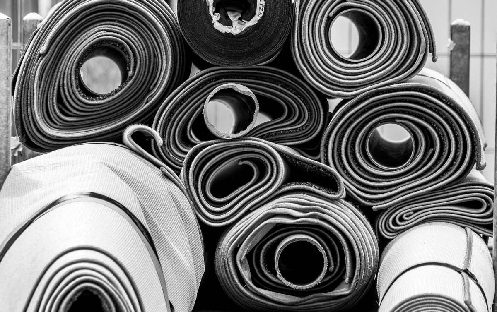

We haul old carpet, carpet pad, tack strip, torn-out laminate and the boxes the new flooring came in. If your installer's quote did not include haul-away, the old floor usually ends up rolled in the garage, and that is where we pick it up. One thing to check first: very old tile or sheet flooring under the carpet needs a look before anyone breaks it up.

This is one of the most common piles we see in the northern suburbs. The new floor went in over a day or two, the crew packed up their tools, and the old carpet stayed behind.
Why the old carpet is still in your garage
Flooring quotes are not all written the same way. Some include tear-out and haul-away of the old floor. Some include tear-out only and leave the material on site. Some leave the tear-out to you.
None of those is wrong. It just needs to be clear before the job starts. If you are still getting quotes, ask each installer one plain question: when you leave, does the old carpet leave with you? If the answer is no, you know the pile is coming, and you can plan for it instead of finding it.
If the floor is already in and the pile is already in the garage, that is fine too. That is the part we do.
What a carpet tear-out leaves behind
A carpet tear-out produces more than carpet. On a typical job we carry out:
- The carpet itself, usually cut into strips and rolled
- The pad underneath, which is bulky and light and falls apart as it ages
- Tack strip, the thin wood strips around the edge of the room with nails pointing up
- Staples, transition strips and the metal edging at doorways
- Stair carpet, cut off tread by tread
- Old laminate or vinyl plank if more than one room was redone
- Boxes, plastic wrap and underlayment offcuts from the new floor
The tack strip is the part to handle carefully. Those nails are sharp and they point up. If you are rolling carpet yourself, wear gloves, keep the strips in a box or a bucket, and keep kids and pets out of the garage until it is gone. We would rather pick up a messy pile than have somebody step on one.
If there is old tile under the carpet, stop and check before anything gets broken up. Older vinyl tile, sheet flooring and the adhesive under them can contain asbestos. Carpet on top is not the concern. Breaking, sanding or scraping the older floor underneath is. That is a job for a licensed professional, not for us and not for a weekend project.
The old floor under the carpet
Pulling carpet sometimes uncovers an older floor underneath, especially in houses from before the 1980s. The EPA's guidance on protecting your family from asbestos says not to sand or try to level asbestos flooring or its backing, and that when asbestos flooring needs replacing, installing new floor covering over it is the preferred option where possible.
What that means for us is simple. We haul the carpet, the pad and the tack strip. We do not break up, scrape or haul old tile or sheet flooring that might contain asbestos. If the installer found something under your carpet they were not sure about, get it tested before anyone touches it. The same goes for paint in an older house: sanding and scraping old paint is its own regulated job, which our construction debris after a remodel post covers along with the lead-paint redirect.
Can the city take it instead?
Sometimes, in small amounts. It depends on your city and on how much carpet there is.
McKinney's bulky item collection lists floor covering and carpet as accepted, but only a small section, and it lists materials from construction, demolition or remodeling projects as restricted. Frisco's bulk trash pickup accepts only a single limited section of carpet and does not accept construction or remodeling waste at all. Plano runs its own bulky waste collection with its own list.
So if you pulled up one small area rug's worth of carpet from a closet, the city may take it on your regular collection day, and that is the cheapest route. If a whole floor was redone, it is almost always more than the city will accept, and that is when people call us.
Where old carpet actually goes
We will be straight about this. Old carpet and pad are hard to recycle. The EPA's durable goods data estimates that only about 9 percent of carpet fiber, backing and padding was recycled in 2018, and that most carpet and rugs, about 73 percent, went to landfill.
Carpet that has been walked on for years, cut into strips and rolled with the pad does not have a donation path. It is disposed of properly. What we can recycle out of a flooring job, we do: the metal transition strips and edging go with the metal, and the cardboard boxes from the new floor go with the cardboard. Where your junk goes after pickup explains how a real load gets sorted.
A rug in good shape is a different story. A clean area rug can have a second life with local donation partners. Wall-to-wall carpet that has been cut out of a room usually cannot.
How the job runs
Send a photo of the pile and tell us where it is: garage, driveway, or still in the room. A crew comes out, looks at what is there, and gives you a firm number before anything is lifted. The quote is the bill, and disposal is included.
Our own crews carry it all out, including the loose tack strip and the pile of staples, and sweep up after. If the flooring was part of a bigger remodel with drywall, cabinets and trim in the pile too, the construction debris service covers all of it in one trip. If the new floor went in after water damage, after a slab leak covers the adjuster step that has to come before anything is hauled.
We work across the northern suburbs, including McKinney, Frisco, Plano, Allen, Prosper, Little Elm, The Colony, Richardson, Wylie and Fairview, seven days a week. Call before noon and same afternoon is typical, not guaranteed. You can send us a photo of the pile whenever you are ready.
Frequently asked questions
Do you take old carpet and pad?
Yes. Carpet, pad, tack strip, transition strips, stair carpet and the packaging from the new floor. Rolled or loose, garage or driveway.
Do I need to roll the carpet up before you come?
No. Rolling it helps if you are already pulling it up yourself, but our crew can take it as it lies. Keep the tack strip in a box if you can, since the nails point up.
Will you take old vinyl tile from under the carpet?
Not if it might contain asbestos. Older vinyl tile, sheet flooring and the adhesive under them should be tested before anyone breaks them up. That is a job for a licensed professional.
Can the old carpet be recycled or donated?
Rarely. The EPA estimates most old carpet goes to landfill. We recycle the metal strips and the cardboard from the job. A clean area rug may be donated, but cut wall-to-wall carpet usually cannot.
Will my city pick up old carpet?
Sometimes, in a small amount. McKinney and Frisco both limit carpet in bulk pickup, and neither takes remodeling waste. A whole room or a whole floor is usually more than the city will take.
Before you book an installer, ask about the old floor. If the pile is already sitting there, the rest of what we haul is on the services page.